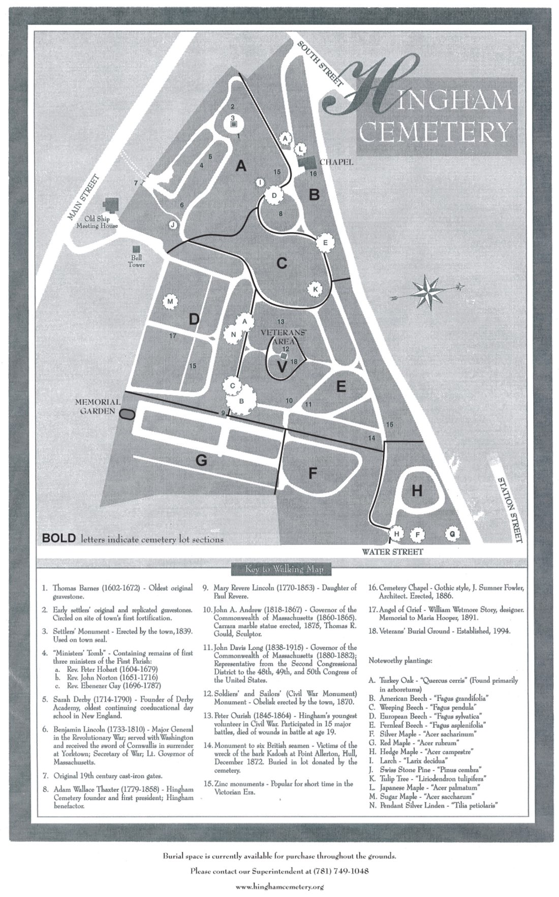

Self-guided walk · about 45 minutes · open dawn to dusk
Start at the South Street gate by Ames Chapel and follow the sections in order. Please keep to the paths, give funerals and visitors their privacy, and leave every stone as you found it. The cemetery is an active burial ground first and an arboretum second.
Legend and tagging
Lot sections as lettered on the official cemetery map. Section areas are traced from that map and are approximate.
Every pin says how we know where the tree is. Nothing is placed by guesswork.
Position taken from a lettered tree icon on the cemetery's official map, georeferenced to the aerial photo. Accuracy about 20 meters. Square marker with the map letter.
An inventory tree that matches an official map icon by species and section. Needs a reviewer to confirm or move it. Dashed ring.
A board member placed or moved the pin on the aerial photo in Review mode. Double ring.
Confirmed standing at the pin on site, with date and reviewer. Green ring. This is the level the accreditation map should reach.
Known section, no position yet. Listed in the section roster, never drawn as a pin.
A Confirmed: the recorded name fits a tree that can be verified by description.
B Probable: species certain, cultivar or exact species needs one field check.
C Needs field ID: genus only, or the recorded name is unlikely for this climate and a different identity is proposed.
Where a different name is proposed, the record shows both the name as written and the proposed name, and the board decides in Review mode.
Tags power the filters and the printed legend.
Ames Chapel (1886) Landmarks from the official walking key (monuments, gates, memorial garden)
A · 7 trees Section roster: how many inventory trees belong to a section but are not yet placed. Click it to list them.
Basemaps: MassGIS spring 2025 aerial photography (public record) and OpenStreetMap. The official cemetery map can be laid over the aerial at any opacity to help place trees.
A historic burial ground and a living collection
Thirteen acres above Hingham Harbor, laid out in the 1600s and shaped as a garden cemetery in the 1800s. Beneath Turkey oaks, weeping beeches and a grove of larches lie the town's first settlers, two governors, a Revolutionary War general and a daughter of Paul Revere. The Hingham Cemetery Corporation, an all-volunteer board, is documenting the tree collection and pursuing ArbNet Level I arboretum accreditation.

What the Morton Arboretum's ArbNet program asks of a Level I arboretum, and where Hingham stands today. Accreditation is being pursued; it has not been awarded.
Hingham Cemetery Corporation is managed by an all-volunteer Board of Directors and supported by Friends of Hingham Cemetery, a 501(c)(3). It receives no municipal funding. Office and Ames Chapel: 12 South Street, Hingham, MA 02043. Phone 781-749-1048. Open to the public year round, dawn to dusk.
Two town-owned monuments stand on the grounds: the Settlers' Monument (1839) and the Soldiers' and Sailors' Monument (1870).
Tree records were transcribed from the cemetery's two inventory sheets. Section areas, the chapel, landmarks and 15 lettered tree icons were digitized from the official cemetery map and georeferenced to the MassGIS 2025 aerial photo using four control points (chapel, west tip, southeast and northeast corners). Fit accuracy is about 14 meters RMS, which is why official-map positions are labeled approximate and why every pin carries a status. No position was invented; trees without evidence stay in their section roster until a reviewer places them.
A desk review by a consulting botanist checked every name against Plants of the World Online, the RHS and Go Botany. Field checks still decide the flagged records.
Board review
Exports include the original record, the reviewed name, the position, the status, reviewer and date, so they can be merged back into the master inventory and the accreditation file.